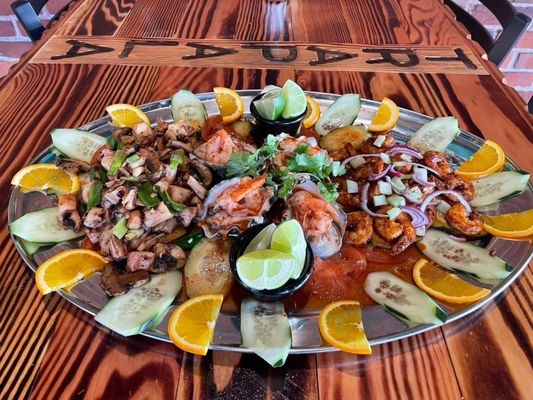

What's cooking
Huge burritos, fresh ceviche and mango margaritas - cooked to order from open to close.
Lunch & dinner
A full menu from open to close, cooked to order.
Burritos, tacos & tortas
The classics, made fresh and generously portioned.
Fish & seafood
Aguachile, ceviche, shrimp and fish specials.
Vegetarian dishes
Meat-free plates that are genuinely satisfying.
Family dining
A relaxed, friendly room - kids welcome.
Two locations
Downtown Woodburn and Hubbard, Oregon.

Authentic Mexican food in downtown Woodburn
Trapala Restaurant LLC is a family-owned Mexican restaurant in downtown Woodburn, with a second location in Hubbard. We cook the traditional flavours of Mexico - meat, poultry, fish and seafood, plus vegetarian dishes - fresh every day, from recipes passed down through the family.
- Lunch & dinner
- Burritos, tacos & tortas
- Fish & seafood
- Vegetarian dishes
From our diners
Very good authentic Mexican food! All of the food I've tried is very delicious!
My daughter ordered the Chili Colorado Burrito and it was literally the BIGGEST burrito I have EVER seen! Humongous!
Wonderful food. Good service. I enjoyed the Pollo Ranchero. The green salsa for the chips was actually better and hotter than the red.
Everything we ordered not only looked delicious it was delicious! The portion size was a lot larger than we expected. A cutie little shop with a great atmosphere.
Service here is so friendly and fast! Brought family here and have been here a few other times. Absolutely love their mango margaritas blended along with the vegetarian burrito!
Good to know
Do you take reservations?
For larger parties, yes - call ahead and we will hold a table.
Is there vegetarian food?
Yes, several meat-free dishes and configurable plates.
Where are you located?
430 N 1st St in downtown Woodburn, plus a second location in Hubbard.